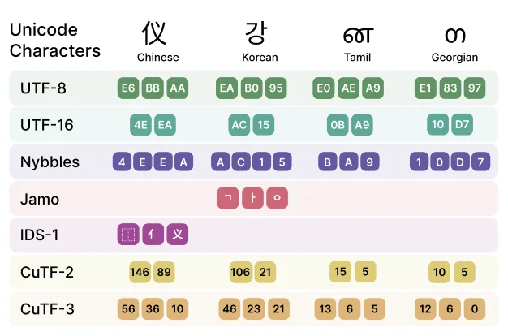
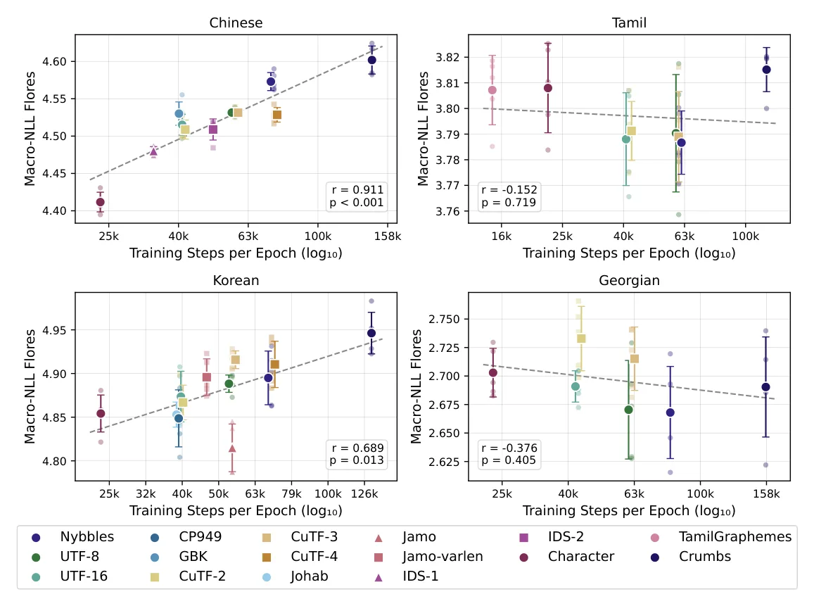
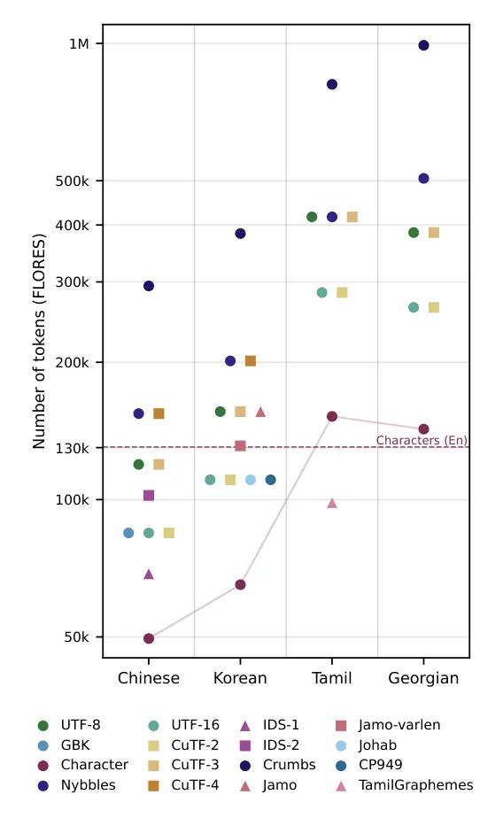

O problema do UTF-8 como padrão universal
Desde que os modelos de linguagem baseados em subpalavras (subword tokenization), como BPE, mostraram limitações em lidar com vocabulários extensos e viés de injeção, houve um movimento crescente em direção à tokenização em nível de byte. A ideia é eliminar os vieses indutivos impostos pela divisão artificial de palavras, tratando o texto como uma sequência bruta de bytes. No entanto, enquanto a comunidade se concentra em como dividir o texto, o método subjacente de conversão de caracteres em bytes é frequentemente ignorado. O padrão de fato na computação moderna é o UTF-8, uma codificação de comprimento variável que pode representar todos os pontos de código Unicode usando de 1 a 4 bytes.
O uso do UTF-8 como entrada padrão para modelos de linguagem introduz ineficiências e inequidades entre idiomas. Como o UTF-8 é projetado para ser universal, ele não é otimizado para a estrutura específica de nenhum idioma em particular. Para línguas com sistemas de escrita complexos, o UTF-8 pode gerar sequências de bytes longas e pouco informativas, enquanto para outras, pode ser excessivamente verboso. Trabalhos recentes, como MYTE e SCRIPT, tentaram propor alternativas para melhorar a justiça entre idiomas, mas geralmente focaram em uma única dimensão ou idioma, deixando grande parte do espectro de como a codificação afeta o modelamento de linguagem inexplorado.
Este paper, intitulado "When does text encoding matter for language modeling?", busca preencher essa lacuna. Os autores, da Northeastern University e EleutherAI, realizam uma comparação sistemática de 16 métodos de codificação diferentes. Eles não se limitam a comparar o UTF-8 contra uma alternativa; eles exploram uma gama que inclui codificações baseadas em Unicode, codificações específicas de idioma e esquemas personalizados. O objetivo é entender se a escolha da codificação impacta o desempenho do modelo e, se sim, sob quais condições linguísticas isso ocorre.

Metodologia: O framework Aether e o desenho experimental
Para realizar uma comparação justa, os autores precisavam isolar o efeito da codificação do script alvo, sem introduzir ruídos causados por caracteres fora do vocabulário (out-of-vocabulary). Em corpora monolíngues, é comum encontrar palavras estrangeiras, símbolos ou emojis que não pertencem ao script principal. Muitas codificações específicas de idioma não cobrem todo o espectro Unicode, o que levaria a inconsistências no tratamento desses caracteres residuais. Para resolver isso, os autores propõem o Aether Tokenizer (Alternative Encoding Tokenizers for Hybrid Encoding Representations).
O Aether é um esquema de codificação híbrida. Ele aplica uma codificação específica do script apenas aos caracteres do idioma alvo, enquanto utiliza o UTF-8 como um código de fallback para qualquer outro caractere. Isso permite que o modelo seja exposto a todo o universo Unicode, mas mantém a consistência na representação do idioma que está sendo estudado. O pré-processamento separa o texto alvo do restante usando expressões regulares, e os espaços de codificação são armazenados em inventários separados para evitar colisões. Essa abordagem garante que as diferenças de desempenho observadas sejam devidas à eficiência da codificação do script alvo, e não a falhas de cobertura.
Os experimentos foram conduzidos treinando modelos GPT2-base-sized (arquitetura Llama-3) do zero em quatro idiomas ortograficamente distintos: Chinês, Coreano, Tamil e Georgiano. Foram treinados 38 pares únicos de idioma-codificação. Para cada configuração, os modelos foram treinados por uma única epoch em corpora monolíngues de alta qualidade, limitados a aproximadamente 6 bilhões de caracteres (cerca de 15 bilhões de bytes UTF-8). Essa quantidade excede a recomendação de scaling laws para o tamanho do modelo, garantindo que o treinamento seja suficientemente robusto.
Um ponto crucial no desenho experimental é o controle de dados versus controle de computação. Em comparações de tokenizadores, é difícil ser justo tanto em termos de dados vistos quanto de FLOPs gastos. Os autores optaram por igualar a quantidade de dados vistos por cada modelo (uma epoch), em vez de igualar o custo computacional. Isso significa que modelos com tokenizadores menos compressivos (que geram mais tokens) terão mais passos de treinamento por epoch. Se os autores tivessem igualado os FLOPs, os tokenizadores mais compressivos teriam uma vantagem artificial, pois poderiam processar mais dados no mesmo tempo. Ao igualar os dados, a comparação foca na capacidade do modelo de aprender a estrutura linguística dada a mesma exposição informacional.
Resultados: A dicotomia entre densidade e insensibilidade
Os resultados revelam duas tendências distintas e quase opostas, dependendo do idioma. Para o Chinês e o Coreano, a compressão da codificação está fortemente correlacionada com o desempenho do modelo. Codificações mais compactas, que reduzem o número de tokens necessários para representar o texto, resultaram em menor erro de modelagem (Macro NLL). Para o Chinês, a correlação foi forte (r = 0.911), e para o Coreano, moderadamente forte (r = 0.689). Isso sugere que, nesses idiomas, permitir que o modelo reconstrua a informação em menos passos (menos tokens) é benéfico.
Em contraste, para o Tamil e o Georgiano, a escolha da codificação não teve impacto significativo no desempenho. A correlação entre compressão e desempenho foi estatisticamente insignificante para ambos os idiomas (r = -0.152 para Tamil e r = -0.376 para Georgiano). Mesmo quando as codificações variaram drasticamente em termos de taxa de compressão — com diferenças de até 8x para o Tamil e 7x para o Georgiano — o desempenho do modelo permaneceu dentro da variabilidade esperada entre sementes aleatórias. Isso indica que, para esses idiomas, a granularidade da codificação não é um fator limitante para o aprendizado.


Análise: Por que a densidade ortográfica importa?
A hipótese dos autores para explicar essa divergência reside na granularidade ortográfica e na densidade informacional dos caracteres. No Chinês, cada caractere tipicamente corresponde a um morfema, carregando uma quantidade significativa de informação linguística. No Coreano, cada caractere (syllable block) codifica uma sílaba completa. Em ambos os casos, o caractere é uma unidade densa de informação. Quando os caracteres são densos, reduzir o número de tokens necessários para representá-los permite que o modelo processe a informação de forma mais eficiente, possivelmente aproveitando melhor a capacidade de atenção do modelo.
Já no Tamil e no Georgiano, os caracteres correspondem a consoantes ou vogais individuais, que carregam pouca informação isoladamente. Uma palavra nesses idiomas é composta por uma sequência de muitos caracteres, cada um contribuindo minimamente para o significado final. Nesses cenários, a granularidade fina não penaliza o modelo. Seja o texto representado por poucos tokens densos ou muitos tokens esparsos, a informação total a ser aprendida é a mesma. A insensibilidade à codificação sugere que, para scripts alfabéticos ou abugidas com baixa densidade por caractere, a otimização agressiva da compressão pode não trazer ganhos de desempenho proporcionalmente.
Limitações e implicações
É importante notar as limitações deste estudo. Os experimentos foram realizados com modelos de tamanho base (GPT2-size) e em apenas quatro idiomas. Não está claro se os resultados se generalizam para modelos de escala muito maior ou para outros idiomas com estruturas ortográficas diferentes. Além disso, o foco em modelos de linguagem monolíngues pode não refletir totalmente o comportamento em modelos multilíngues, onde a interação entre scripts pode introduzir novos vieses. O uso de codificações híbridas (Aether) também introduz complexidade adicional no gerenciamento de vocabulário, já que a compressão muitas vezes vem acompanhada de um aumento no tamanho do vocabulário do tokenizer.
As implicações práticas são claras: a codificação de texto não deve ser um padrão universal imposto a todos os idiomas. Para idiomas com alta densidade informacional por caractere, investir em codificações compactas ou semanticamente ricas pode valer a pena. Para idiomas com baixa densidade, a simplicidade e a universalidade do UTF-8 podem ser suficientes, sem perda de desempenho. Os autores argumentam que a tokenização, assim como a arquitetura do modelo, deve ser uma decisão de design deliberada, considerando as propriedades linguísticas específicas do corpus alvo. Ignorar a codificação é ignorar uma camada fundamental de como a informação é estruturada para o modelo.
O que fica
- Para idiomas com caracteres densos (Chinês, Coreano), codificações mais compactas melhoram significativamente o desempenho do modelo.
- Para idiomas com caracteres menos informativos isoladamente (Tamil, Georgiano), a escolha da codificação não altera o resultado.
- A densidade ortográfica, e não apenas a compressão, é o fator chave que define a eficácia da tokenização byte-level.
- A codificação deve ser tratada como uma decisão de design específica por idioma, e não um padrão universal fixo.
Paper original: When does text encoding matter for language modeling?
Comentários
Nenhum comentário ainda. Seja o primeiro.